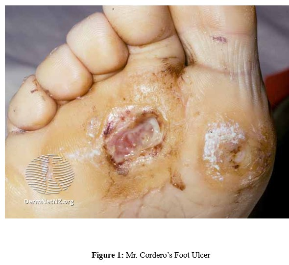
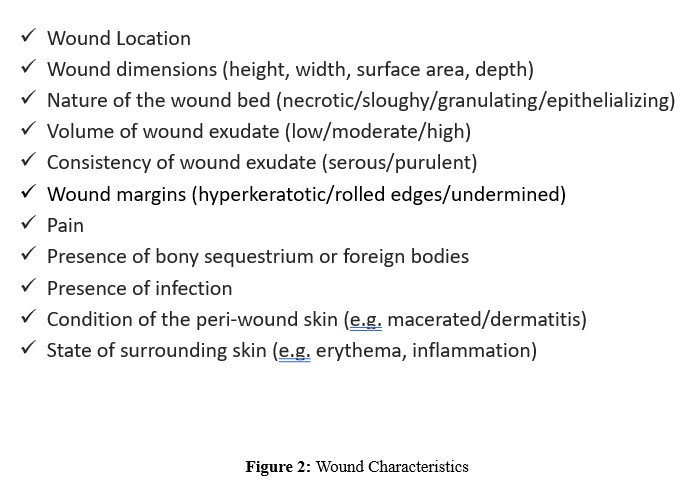
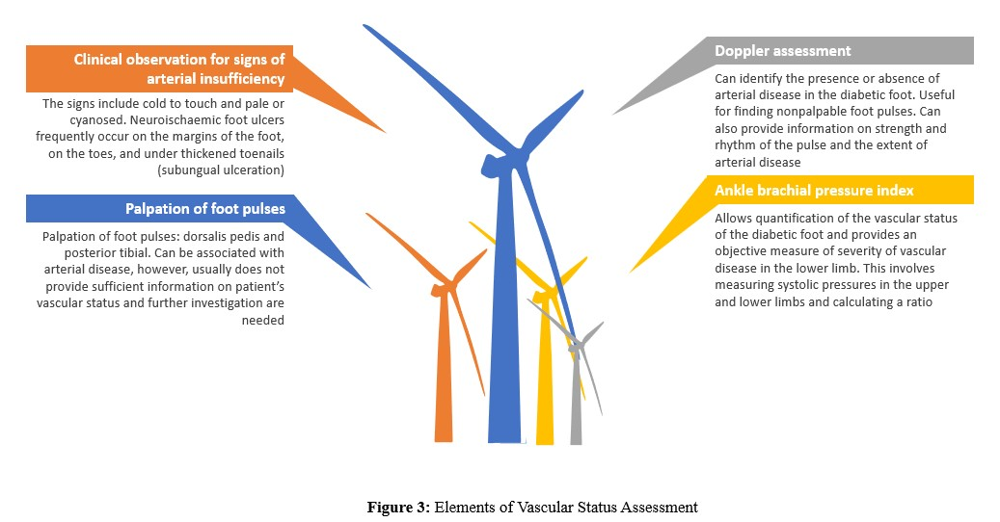
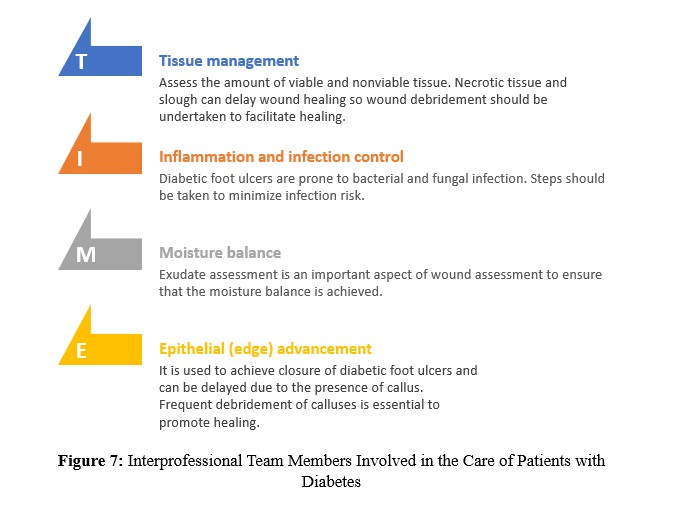
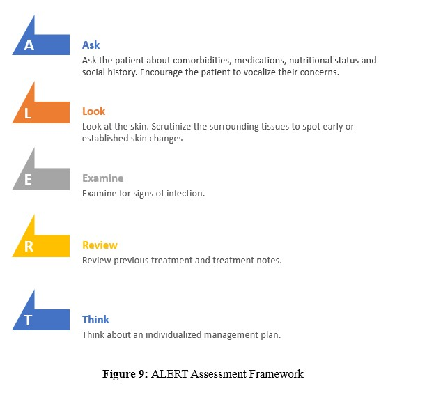

• Type 2 Diabetes x 15 years
• (ischemic) heart disease
• Hypertension
Table of Contents
1. Objectives
2. Case Overview
3. Etiology
4. History
5. Physical Examination
6. Management and Prevention: Hands Off
7. Management and Prevention: Hands On
8. Future of Wound Healing
9. Summary: ALERT
10. Post-Quiz
Objectives
• Understand the risk factors that may predispose a patient to diabetic foot ulcers
• Identify other healthcare providers that may be involved in diabetic foot ulcer care
• Suggest and outline wound assessment and wound management models for diabetic foot ulcer management
• Explore the use of clinical guidelines and the best available evidence to generate a thorough systematic protocol-based approach to the management of diabetic foot ulcers
Continue
• Identify other healthcare providers that may be involved in diabetic foot ulcer care
• Suggest and outline wound assessment and wound management models for diabetic foot ulcer management
• Explore the use of clinical guidelines and the best available evidence to generate a thorough systematic protocol-based approach to the management of diabetic foot ulcers
Case Overview
Rafael Cordero is an 82-year-old man who is presenting with new-onset foot ulcers (see Figure 1). He is accompanied by his wife who is concerned about his overall health.

• Metformin 500 mg BID
• Ramipril 10 mg/day
Continue
• Ramipril 10 mg/day
Etiology
Question 1: What is a wound infection? Type your answer in the text box.
Question 2: What are the two common foot types in patients with diabetes? Type your answer in the text box.
Note: Shortest healing times for neuropathic ulcers have shorter healing times compared to ischemic or neuro-ischemic ulcers.
History
Medical History
- Make a list of pre-existing medical conditions that may be unrelated to diabetes
- Identify complications associated with diabetes, commonly hypertension and dyslipidemia.
Click on each condition to learn more about their impact on wounds
Question 3: List three reasons why individuals with diabetes mellitus are more prone to infection. Type your answer in the text box.
Can lead to peripheral vascular disease, coronary heart disease, stroke and diabetes-related deaths
Stabilization of lipids may be a significant factor in diabetic foot ulcer management
Medications
- Inquire about mediations used to reduce the risk of developing associated complications of diabetes, hypertension and dyslipidemia
- Take a note of medications that can significantly increase the risk of ulceration due to their impact on wound healing. These include steroid therapy, anticoagulant therapy, nonsteroidal anti-inflammatory drugs (NSAIDs) and immunosuppressant drugs.
Nutritional factors
Poor nutrition can negatively impact effective wound healing. Typically, patients with diabetes are advised to follow a diet low in fat, sugar and salt, high in fruit and vegetables and moderate in bread, potatoes, cereals, pasta and rice.Social factors
Obesity, smoking and physical inactivity are associated with poor wound healing. Additionally, low socioeconomic status can indirectly lead to poor outcomes in wound healing due to poor access to health care and low health literacy.Question 4: You already know about Mr. Cordero’s past medical history and medications. What further questions about the wound do you wish to ask the patient? Type your answer in the text box.
You begin to ask the following questions. Click on each question to find out Mr. Cordero’s replies
My blood glucose levels have been up and down. They are typically 5 before lunch but anything up to 20 by the evening.
I try my best to stay away from carbs. The wife interrupts and tells you that his diet is very poor, consisting of foods with high glycemic index.
My wife noted some ulcers on my foot a week ago (see Figure 2). We thought these would heal, but they are not healing.

No pain at all.
Yes, my wife gifted me a new pair of shoes on our anniversary two weeks ago.
Physical Examination
The Hands-Off stage consists of physical examination, specifically examining presence of any foot deformity, wound characteristics, vascular status and neurological status.
Continue
- Limited joint mobility
- Glycosylation of collagen
- Altered foot pressures
- Ethnic background
- Autonomic neuropathy
- Motor neuropathy
- Loss of sensation

- Visual changes related to sensory, autonomic and/or motor neuropathy may be observed in the lower limbs and feet.
- Note that neuropathic foot ulcers typically occur on the plantar aspect of the foot under the metatarsal heads as a result of repetitive mechanical forces.
- Skin lesions, such as a callus or corns, can also cause high plantar pressures.
- A callus is described as a pre-ulcerative lesion, which when neglected, haematomas can form underneath the hardened skin leading to tissue necrosis and ulceration.
Question 5: What are the signs of infection in diabetic foot ulcers? Type your answer in the text box.
Question 6: What assessments should be undertaken before implementing a management plan for Mr. Cordero? Type your answer in the text box.
Management and Prevention: Hands Off
Similar to history taking and physical examination, wound management model has two recommended stages for wound management: Hands-Off and Hands-On. The “hands off” stage consists of patient-centered approach, education/prevention, interprofessional team, nutritional factors and social factors.
Continue
- Manage the patient holistically
- Understand the patient’s expectations
- Take into account the patient’s feelings associated with living with a chronic disease and foot ulceration
- Work with the patient to establish a wound care plan
- Inquire about any perceived barriers to the proposed management plan
- Educate and encourage patients with diabetes to indulge in foot care independently
- Provide resources on local and virtual diabetes education programs, especially those that include information on foot care and diabetic foot ulcer prevention strategies
Question 7: Who should be involved in the care of a patient with diabetic foot ulcer? Type your answer in the text box.
Note: This is not a complete list of interprofessional involved in diabetic foot ulcer care.
Key nutritional elements to diabetic wound care:
Exercise training, nutrition and stress management can significantly reduce glycaemic and blood pressure levels.
- Glucose for generating deposition of new tissue
- Fatty acids for generation of new cell structure
- Protein for collagen formation
- Vitamin C for development of healthy granulation tissue
Exercise training, nutrition and stress management can significantly reduce glycaemic and blood pressure levels.
- Improve psychosocial therapies, such as encouraging self-management skills and patient empowerment
Question 8: What are different types of risk ? Type your answer in the text box.
Management and Prevention: Hands On
The “hands on” stage involves physical intervention for wound bed preparation, infection management, antimicrobials, offloading diabetic foot ulcers and Charcot’s osteopathy.
Continue
The TIME framework aims to optimize the local wound environment for healing.

Sharp debridement is generally considered to be the gold standard treatment for diabetic foot ulcers.
Sharp debridement is generally considered to be the gold standard treatment for diabetic foot ulcers.
Question 9: What are the benefits and contraindications of wound debridement? Type your answer in the text box.
Question 10: What are the different stages of foot ulcer and how do the stages play a role in the management of diabetic foot ulcer? Type your answer in the text box.
Question 11: What factors impact the selection of dressing? Type your answer in the text box.
- Infection is a causative factor for major amputation
- Infections must be quickly assessed and aggressively managed
- Initial treatment should include wound cleansing, nonviable tissue debridement and probing, with a blunt instrument, to identify depth, foreign bodies, or exposed bone
- Osteomyelitis/bone infection is indicated if a sterile probe inserted into the wound reaches bone
- Commercially available antimicrobial dressings include silver, iodine, and honey impregnated dressings
- If the patient shows signs of cellulitis, lymphangitis and osteomyelitis, systemic antibiotic therapy is always indicated
- Topical antimicrobial therapy alone is not enough for the management of cellulitis, lymphangitis, and osteomyelitis; however, they may be used in combination with systemic therapy
- Antibiotics are usually empirically selected at first and then altered depending on results of culture and sensitivity tests
- During severe infection, the patient will need prompt hospital admission for intravenous (IV) antibiotics
- On admission the foot should be promptly assessed to determine whether surgical drainage and debridement are needed
- The diabetic foot is often subject to elevated plantar pressures due to the effects of sensory, motor and autonomic neuropathy
- If left unaddressed, this can contribute to the development of diabetic foot ulceration and can delay wound healing
- Standard wound management strategies for diabetic foot ulcer include aggressive pressure offloading procedures
- Removable walkers, half shoes, simple insoles, total contact insoles, temporary footwear with forefoot or rearfoot adaptations such as Darco Heelwedge shoes, felt padding and the use of crutches or wheelchairs are all examples of removable devices
- The Charcot joint is reported as a gradual and destructive manifestation of neurosensory damage in diabetic patients
- The development of the Charcot changes in the diabetic foot can lead to deformity, increased risk of skin breakdown and lower limb amputation
- Thus, it is common for practitioners to have to manage a combination of pre-ulcerative changes, diabetic foot ulcer, and Charcot foot
- Management of Charcot foot is focused on partial weight-bearing strategies, offloading high-pressure areas or complete immobilization techniques
- Factors that affect intervention are stage of development, complications, and the absence of a foot ulcer (as offloading measures are used to prevent occurrence)
Question 12: What management strategies are the most appropriate for Mr. Cordero? Type your answer in the text box.
Question 13: What are the recommended assessments based on risk status? Type your answer in the text box.
Future of Wound Healing
Recently, negative pressure wound therapy has been used to treat complex wounds. It is believed that negative pressure influences healing by expediting wound debridement, removing excess fluid that can prevent wound healing, decreasing localized oedema and increasing blood flow.
Continue
- Modern initiatives for managing diabetic foot ulcers include topical growth factors and living human skin equivalent
- A multicentre study studied the effect of platelet-derived growth factors (PDGF) on the healing of neuropathic diabetic foot ulcers.
Summary: ALERT
In conclusion, ALERT Assessment Framework helps provide the necessary steps involved before diabetic foot ulcers can be managed.

Continue
Post-Quiz
1. Which of the following can provide information on strength and rhythym of the pulse and the extent of arterial disease?
2. Which of the following is part of the “hands-off” wound management stage?
3. Which of the following is a contraindication of would debridement?
4. What is implicated as the most important causative factor for major amputation, and thus is treated aggressively?